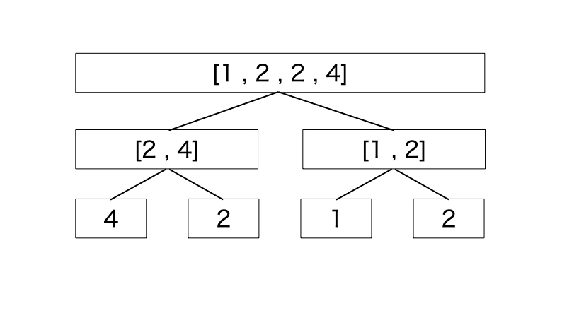

長さ N の数列に対して、以下のクエリを Q 回処理してください
ただし、数列の要素の初期値は ∞ とします。
・1 i x : i 番目の要素を x に変更する
・2 l r x : l 番目から r 番目までの要素で、x 以下のものの個数を出力してください
N,Q ≦ 200000
セグメント木の各セグメント(ノード)に、対応する区間内の要素を入れた Set を持たせます。以下は、列 : \(4,2,1,2\) に対してセグメント木を構築した場合です。

セグメントツリーは高さが logN で、ある層の頂点が持つ数列の長さの和は N なので、空間計算量は(NlogN)です。
Set は、以下の操作に対応している必要があります。
要素を更新する際は、元々の値 (oldval) を削除し、新しい値 (x) を挿入するということを自身以上の上層のセグメントに対して行います。
クエリあたりの計算量が \(O(\log^2{N} )\) なので以下の工夫で定数倍を軽くします。
初期化時点ではセグ木の各セグメントの Set のサイズが \(0\) なので、無駄な計算が抑えられます。特に、サイズ \(N\) の列に対してセグ木を構築するとき、列のサイズが \(N\) 以上の \(2\) の冪乗になるまで単位元で埋めることになるため、無駄な領域のデータを持たないという点でシナジーがあります。
Merge Sort Tree は、列のある区間内の要素を Set で管理します。Set が区間和を持つなら、列のある区間内の値のうち、\(x\) 以上 \(y\) 未満の値の総和なども実現できます。
値の更新がない場合は、Set の代わりに配列をソートしておくだけで、同じようなことができます。こっちの方が高速で良いです。